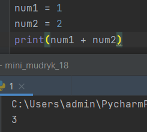
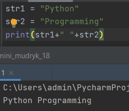
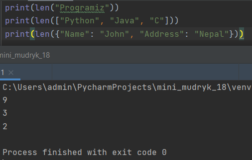
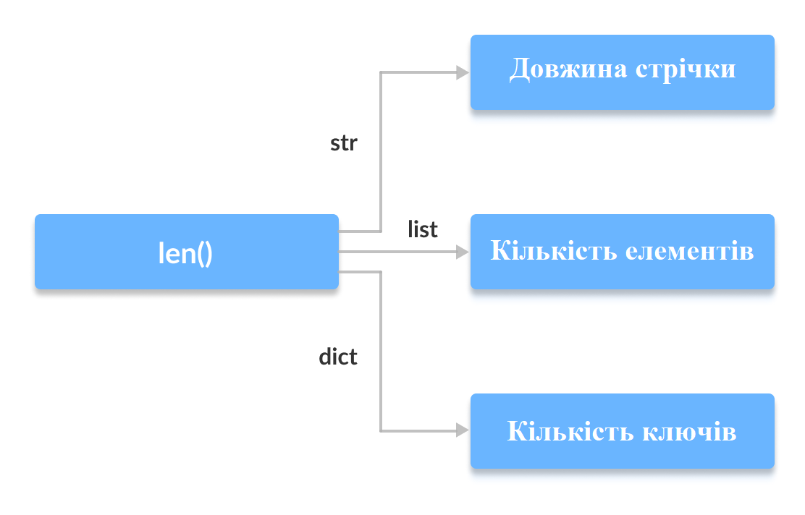
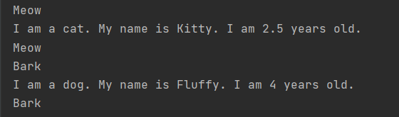
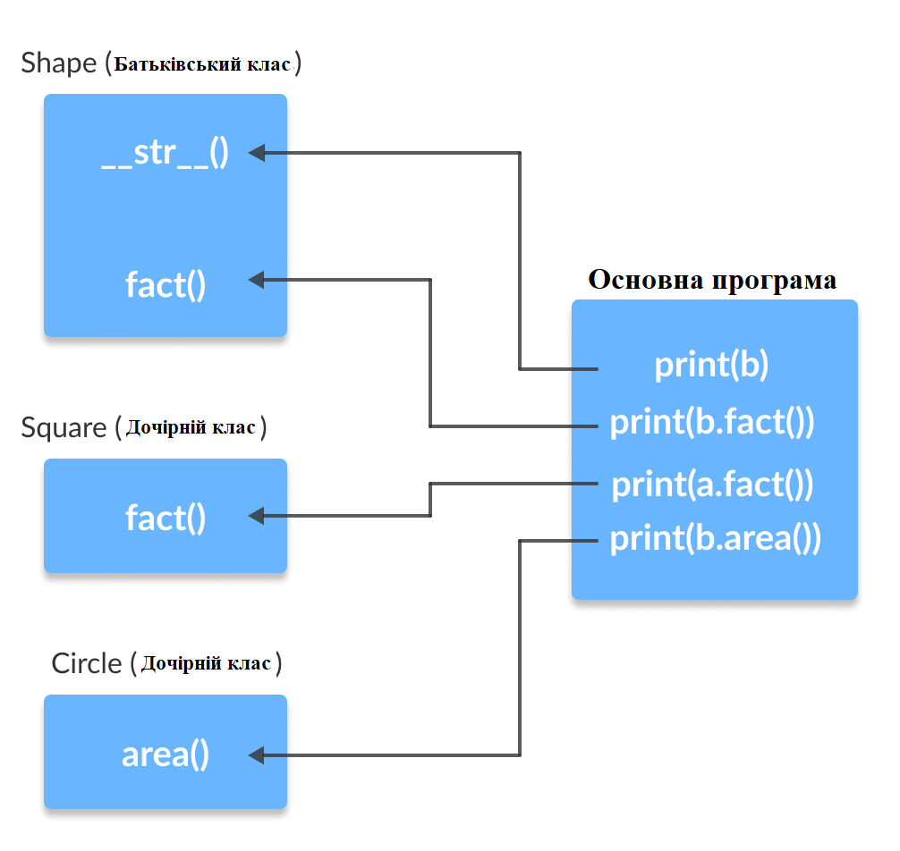
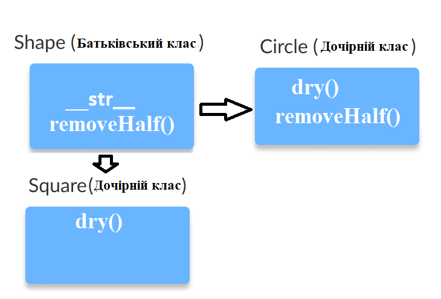

Що таке поліморфізм
Поліморфізм в об'єктно-орієнтованому програмуванні - це можливість обробки різних типів даних. Що належать до різних класів, за допомогою "однієї і тієї ж" функції, або методу. Насправді однаковим є тільки ім'я методу, його вихідний код залежить від класу. Крім того, результати роботи однойменних методів можуть істотно відрізнятися. Тому в даному контексті під поліморфізмом розуміється безліч форм одного і того ж слова - імені методу. Яскравим прикладом поліморфізму є використання оператора "+".Ми знаємо, що оператор + часто використовується в програмах на Python. Але він не має єдиного використання. Для цілочисельного типу даних оператор + використовується щоб скласти операнди. Отже, програма виведе на екран 3. Подібним чином оператор + для рядків використовується для конкатенації.

В результаті буде виведено Python Programming. Тут ми можемо побачити єдиний оператор + виконує різні операції для різних типів даних. Це один з найпростіших прикладів поліморфізму в Python.
Поліморфізм серед функцій
В Python є деякі функції, які можуть приймати аргументи різних типів. Одна з таких функцій - len (). Вона може приймати різні типи даних. Давайте подивимося на прикладі, як це працює. Тут ми можемо побачити, що різні типи даних, такі як рядок, список, кортеж, безліч і словник можуть працювати з функцією len (). Однак, ми можемо побачити, що вона повертає специфічну для кожного типу даних інформацію. 
Поліморфізм серед класів
Поліморфізм - дуже важлива ідея в об'єктно-орієнтованому програмуванні. Ми можемо використовувати ідею поліморфізму для методів класу, так як різні класи в Python можуть мати методи з однаковими іменами. Пізніше ми зможемо узагальнити виклик цих методів, ігноруючи об'єкт, з яким ми працюємо. Давайте поглянемо на приклад: Тут ми створили два класи Cat і Dog. У них схожа структура і вони мають методи з одними і тими ж іменами info () і make_sound (). Однак, зауважте, що ми не створювали загального класу-батька і не з'єднували класи разом будь-яким іншим способом. Навіть якщо ми можемо упакувати два різних об'єкта в кортеж і ітерованих по ньому, ми будемо використовувати загальну змінну animal. Це можливо завдяки поліморфізму.
Парадокс
Поліморфізм і успадкування
Як і в інших мовах програмування, в Python дочірні класи можуть успадковувати методи і атрибути батьківського класу. Ми можемо перевизначити деякі методи і атрибути спеціально для того, щоб вони відповідали дочірньому класу, і це поведінка нам відомо як перевизначення методу (method overriding).Поліморфізм дозволяє нам мати доступ до цих перевизначених методам і атрибутам, які мають те ж саме ім'я, що і в батьківському класі.
Давайте розглянемо приклад: from math import pi 
Тут ми можемо побачити, що такі методи як __str __ (), що не були перевизначені в дочірніх класах, використовуються з батьківського класу. Завдяки поліморфізму інтерпретатор пітона автоматично розпізнає, що метод fact () для об'єкта a (класу Square) перевизначений. І використовує той, що визначений в дочірньому класі. З іншого боку, так як метод fact () для об'єкта b не перевизначений, то використовується метод з таким ім'ям з батьківського класу (Shape).
Задачі
Задача 1
В якості практичної роботи спробуйте самостійно перевантажити оператор додавання. Для його перевантаження використовується метод __add __ (). Він викликається, коли об'єкти класу, що має даний метод, фігурують в операції додавання, причому з лівого боку. Це означає, що в вираженні a + b у об'єкта a повинен бути метод __add __ (). Об'єкт b може бути чим завгодно, але найчастіше він буває об'єктом того ж класу. Об'єкт b буде автоматично передаватися в метод __add __ () в якості другого аргументу (перший - self). Відзначимо, в Python також є правобічний метод перевантаження складання - __radd __ (). Згідно поліморфізму ООП, повертати метод __add __ () може що завгодно. Може взагалі нічого не повертати, а "мовчки" вносити зміни в якісь вже існуючі об'єкти. Припустимо, у вашій програмі метод перевантаження складання буде повертати новий об'єкт того ж класу.
Задача 2
Напишіть програму з ієрархією овочів як на малюнку і вивести про них інформацію на екран і виконати над екземплямари класу різні дії 